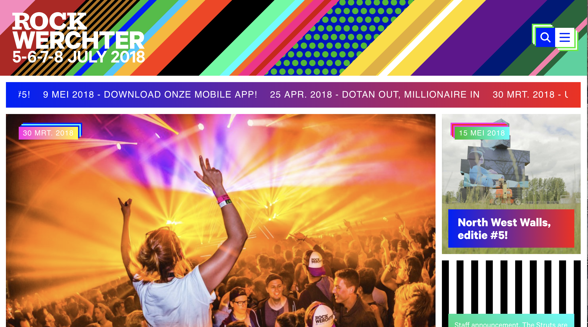

Concurrentie analyse

+
- Ze tonen meteen hun beste namen, zodat je meteen weet of het iets voor jou is.
- Directe link naar de ticketverkoop op de startpagina
- Duidelijke info bij de ticketverkoop
-
- Bij de site van pukkelpop vind ik niet meteen een foutje

+
- Ze zetten duidelijke info op hun startpagina
-
- Er staan teveel 'onnodige' zaken op hun startpagina, ik zou liever de line-up al meteen zien
- Het is een uitvouwmenu waardoor je eerst op een knop moet drukken, dit is in mijn ogen onnodig./li>

+
- Je ziet meteen de grote namen
- Zeer eenvoudig en toegankelijke menubalk
- Alles wat je nodig hebt staat op de eerste pagina